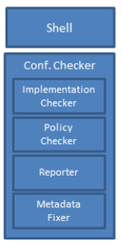
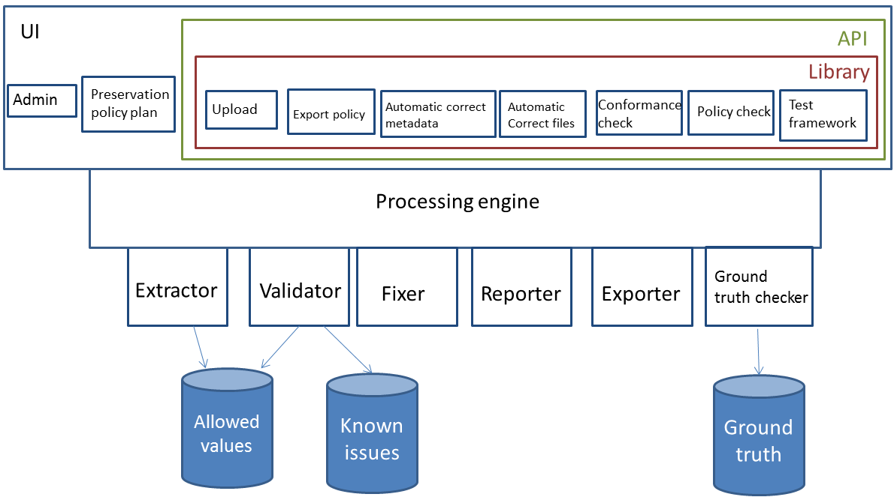
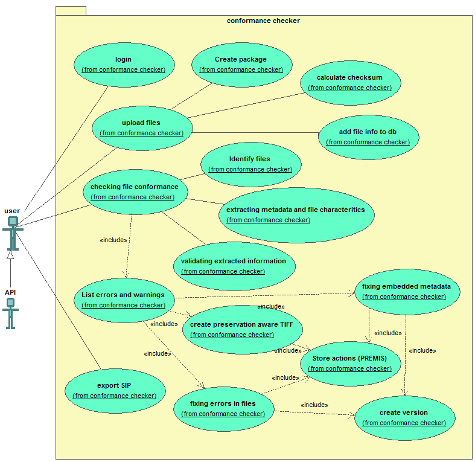
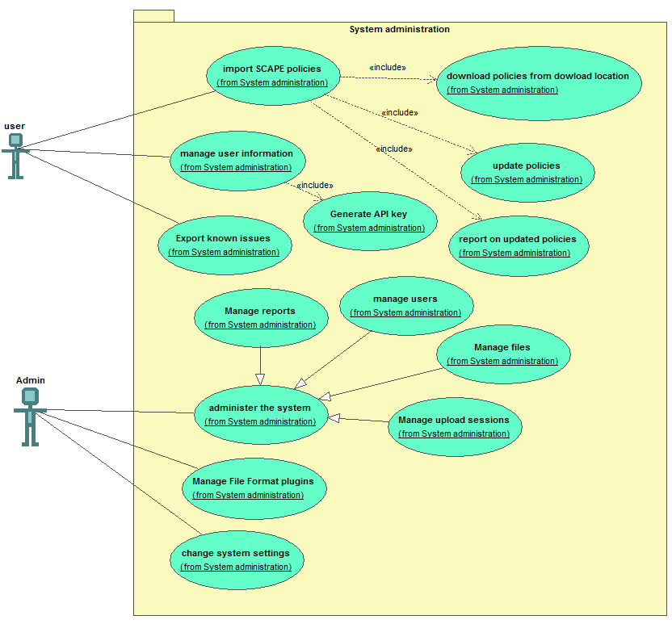
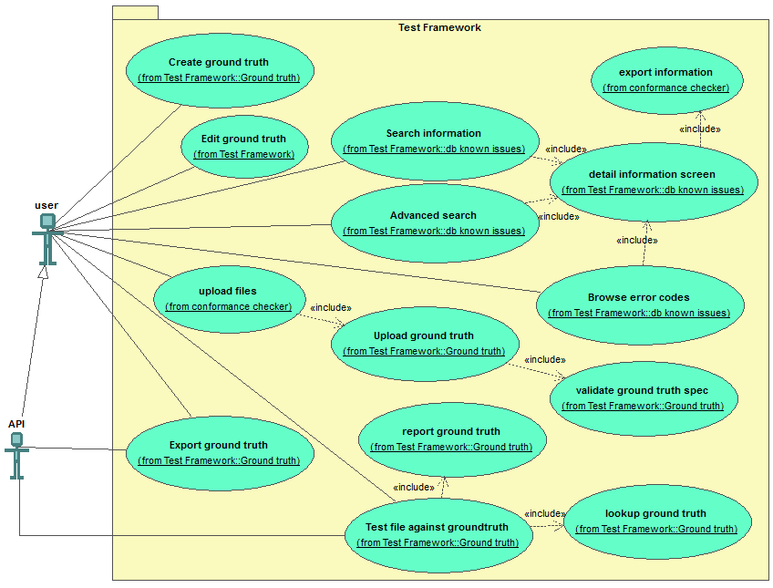
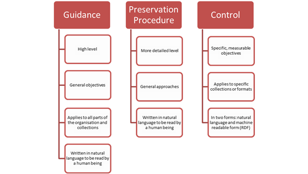
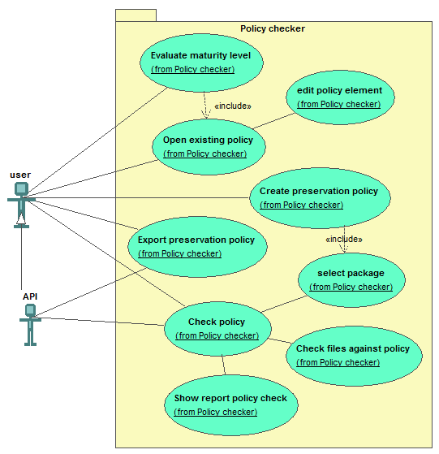

Download Functional analysis: (odt/pdf)
Download Technical design: (odt/pdf)
Download TIFF specification: (odt/pdf)
Download test files
Introduction
Functional analysis
This document describes the detailed functionality of the system. This document need to be read with the Technical design. The details of the technical design are not included in the functional analysis.
This document is available under the Attribution-ShareAlike 2.0 Generic (CC BY-SA 2.0)
Preforma project
The Preforma1 project, PREservation FORMAts for culture information/e-archives, is a consortium of 14 partners, with 9 memory institutions as partner. The goal of the project is to create a set of tools and procedures for gaining full control over the technical properties of digital content intended for long-term preservation by memory institutions.
The project consists of 6 vendors creating different conformance checkers.
LIBIS/AWare conformance checker2
The LIBIS/AWare conformance checker checks the implementation of TIFF/EP and TIFF/IT files according to the specification ISO 12234-2 (TIFF/EP) and ISO 12639 (TIFF/IT). The conformance checker also has a policy checker, metadata fixer and reporting module.

The policy checker will do extra checks based on the preservation policy of an organization. For example, the TIFF standard lets you included different color profiles, but the policy of an institution could be to only allow for example the ECI color profiles, because this is a standard color profile.
The metadata fixer will allow a user to correct some mistakes in the embedded metadata.
The reporter module generates reports about the Implementation checker and policy checker
The LIBIS/AWare conformance checker will implement all the functionality as specified in the Preforma requirements3, but we will add functionality to it as well. For the conformance checker we will define a preservation-safe TIFF/A4. This is a subset of the TIFF standard with extra specification of elements that are not clear in the TIFF standard and elements that will hinder preservation are removed. The intention is to discuss this with ISO to update the TIFF standard during the next phases.
Also the policy checker will be extended. With our tool the use can create a full preservation policy according to the SCAPE Preservation policy Framework. To help the user specify a preservation policy we will also import the SCAPE preservation policies.
An extra module we will add is the test framework. This will be used to test the conformance checker during development, but it can be for example used by developers to test if their TIFF files validate against Ground truth files. These Ground truth files describe the TIFF files as they should be according to the standard or TIFF/A, a developer can evaluate the difference in conformance between the files in the Ground truth and the same files with new software or new version of existing software.

Conformance checker
Diagram

Use cases
Login
-
When a user opens the application, the system responds by opening the login windows.
-
When a user fills in username and password and press login, the system responds by opening the home screen, where the user can select the different options:
-
Upload files
-
Manage the users settings
-
Open existing reports
-
Create a preservation policy
-
Change system settings
-
Administer the system (if the user is an administrator)
-
Upload files
-
When the user select upload files, the system responds by opening the file upload window.
-
When the user selects the files or the directory to upload, the system responds by:
-
creating a new package
-
uploading the files and the directory structure to the server. When the system detects it is running locally, then the upload process is a copy process
-
While uploading the files the system also calculates a MD5 checksum on the local system and verifies the checksum to see if the files are transferred properly. The files will be uploaded in chunks and for every chunk the checksum is checked. When the upload is finished, the checksum is also checked.
-
Adding the file references to the database
-
-
When the upload process is finished, the user can click on Check the conformance or check policy.
Checking the file conformance (UI)
-
When the user selects check the conformance, the system responds by opening the window to select a package.
-
The user selects a package in the UI. The system responds by loading the package. If the user clicks on new package, the upload files window is loaded.
-
If the user selects analyze file, the system responds by analyzing the file, this means
-
Identifying the file formats (in the first instance only TIFF is used).
-
Checking if extractors and validators are present for that file type.
-
Extracting the embedded metadata for the file format, the metadata will be stored in the database of the conformance checker
-
Validating the metadata conforming the standard specification. In this step the extracted values are compared against the database of allowed values
-
Extracting the format specific elements. The specific elements of the file format are stored in the database of the conformance checker.
-
Storing the extracted file information in a database so the information can be used by other modules.
-
Validating the file characteristics against the database with allowed values (see later), to see if the file conforms to the specification. If problems are detected, the system checks the known issue database (see later) to see if the value corresponds to a known issue. If the problem is not known the error is reported as unknown.
-
-
The system generates a report based on the output of the analysis. The report contains per file:
-
errors for issues that do not conform to the standard. The report also links to extra explanation about the problem. The explanation with the error message in the report also indicates if this is a problem that can be fixed by the conformance checker tool (see Fixing the embedded metadata (UI) and Fixing an error in the file (UI))
-
warnings for issues that prevent long term preservation. The report contains links to extra explanation of the warnings and why they are warnings.
-
Valid if no errors were detected
-
Fixing the embedded metadata (UI)
In the error report of the conformance checker, the system reports the metadata errors. It also shows which can be automatically fix. An example of embedded metadata that can be automatically changed are wrong formatted date and time notations.
-
If the error is fixable, the user clicks link next to the metadata error. If the error is not fixable no link is present and the problem is reported. The information on the website explains the error.
-
Before executing the fix, the system checks if there is a backup of the file. If the backup file doesn't exist the file is copied and the new version is added to the database (see technical design, substorage system for the details).
-
The fix is performed on the last file. This means if multiple corrections are executed the fixes are executed on the file that has all the previous fixes combined. After every fix the file is validated again to see if no new problems occur and that the error is fixed. All the fixes preformed and the remaining problems are recorded in the database. This will be used to create the PREMIS5 metadata upon SIP6 export.
-
If the error didn't get fixed. The system reports the error and reverts to the previous situation.
-
The user has also the possibility to fix all the errors. When the user clicks on fix all the errors. The system creates a backup file and preforms all the fixes. In the end a validation checks if the correction succeeded. If it didn't the error is reported to the user and the backup is restored for that file. The user can click through every error to look for the problem, so they know where the problem lies.
-
The user can also fix all the problems at once. The user clicks on the top of the report Fix all problems. The system will create for every file a backup and preform all the fixes on the files that can be executed automatically.
Fixing an error in the file (UI)
This will allow a user to fix some common errors in a file. For example a TIFF file starts with uppercase MM of II, some applications create files with lowercase. It is prohibited by the specification and for long time preservation it is better to change this to uppercase as it should be (See the TIFF/A specification for the details of the problems that can be solved).
-
The error report contains information about the error and if it can be fixed. By clicking on the link next to the error. The system preforms a fix of the error in the file(s) affected.
-
Before executing the fix, the system checks if there is a backup of the file. If the backup file doesn't exist the file is copied (see technical design, substorage system for the details)
-
The fix is performed on the last file. This means if multiple corrections are executed the fixes are executed on the file that has all the previous fixes combined. After every fix the file is validated again to see if no new problems occur and that the error is fixed.
-
The system writes in the database the preformed actions on the file (audit log). Every error that is fixed is a row. The row contains file identifier, problem description, error code and description of the solution. The description of the solution is a human readable. This will be used to create the PREMIS data when exporting to SIP.
There isn't a fix all option, instead the file will be saved as a 'preservation-safe' TIFF. This means the file will be saved with a subset of the TIFF specification as defined in the specification (See TIFF/A specification). This makes the file not only TIFF/EP or TIFF/IT-compliant, but also solves preservation and data interchange problems.
-
When the user clicks on convert at the top of the report and the user selects a file format, the system will save all the files to the selected file format (the first file format will be selected default)
(See technical design for more information, but a File Format plugin can support more than one file format to convert to. This will be preservation-safe TIFF for the TIFF plugin developed during Preforma) -
The system writes the errors that were fixed by converting to the specified file format to the audit log. Every row contains file identifier, problem description, error code and description of the solution (here saved to 'preservation-safe' TIFF)
Export SIP (UI)
When the user is finished with checking the conformance, the user can export the results of the conformance checker.
-
The user clicks export to SIP
-
The system responds by exporting the files (the original files and the new files). If there was a directory structure in the input, the system exports the same directory structure. The new files are added inside the original folder structure with the original files, but they have a CRC32 checksums of the original filename and path added to the filename separated by an underscore. If the filename is too long, the filename is shortened to add the CRC32 checksum. The top folder also has a METS file with for every file the technical metadata in MIX7 format for TIFF images and an audit log in PREMIS with the actions preformed on the files. The audit log is extracted from the database. The technical metadata is read from the file when during the creation of the SIP. The labels in the METS file contain the original filename. For every file a checksum gets calculated, minimum MD5 and SHA-256. This is the minimum information that needs to be present in the METS file, more information can be added.
Administrator interface
Diagram

Use case
Import preservation policies from SCAPE
-
The user clicks in update SCAPE preservation policies on update policies
-
If this is the first time, the system executes a git clone of the SCAPE policies8. Otherwise the system executes a git pull. If there is no new update the answer will be Already up-to-date.
-
The system will run the import script to convert the RDF to database. The uri is the identifier in the database and is used to update the existing data. If an uri isn't present the rule is marked as deleted. If a maturity level is associated the user will be notified. The system will show a list of rules that will be deleted. The system asks if the rule should be deleted as the information will become invisible. If the user presses Yes, nothing happens. The system continues. If the user presses No the rules are marked as not deleted again.
-
The system will show a message: policies updated. Policies added: [number of new policies]; Policies updated: [number of policies updated]; Policies deleted: [number of policies deleted]; Total policies: [all the available policies, excluded deleted policies]
Exporting the database with known issues
-
When the user selects export database, the system responds by asking for the format to export. The possible formats are JSON and HTML.
-
When the user selects the format to export, the system responds by showing a dialogue where to save the export.
-
When the user selects a location to export the database to, the system responds by exporting the active, deprecated and inactive error codes with the example TIFF files in the specified location
User page
The user page contains the users settings (for example username and password). The user can also see the previous stored reports and files.
-
When the user selects Manage user information. The system responds by retrieving all the available user information and displaying it on screen.
-
In the screen the user can change the password associated with the account and the full name
-
The user can also select the language of the interface. This means that the error description and the human readable will be shown in the interface language. If the information is not translated, the information will be shown in English (the default language)
-
The user can also select generate API key. When the user presses Generate API key, the system returns a key with current time in microseconds, username and salt value. This will be used by the API.
-
When the user presses Save, the system responds by saving the information in the database.
-
-
When the user selects Reports. The system responds by opening all the Reports the user has created. Reports are errors reported by validation and corrector.
-
When the user selects Files. The system responds by showing different package. If the user clicks on one of the sessions, the system responds by listing all the original files and if the file has a fixed file, the system also shows this file. In this view the user can also see if a file is valid and if errors are reported. The user can click through to the reports to see the details.
- When the user clicks next to a file on delete, the system responds by deleting the file and all its associated data will be removed. In the list of package the user can also delete a package. There is also a selection button next to every package and one at the top to selected one or more packages to be deleted. If the user presses delete, the system will respond by asking if the user wants to delete the selected package. If the user presses yes, the system will respond by deleting the files and all associated information.
Administrator page
The administrator can manage users, see all package, see all files, see all reports and make a user administrator. The only difference with another user is that the administrator is able to see all the information of all the users and can change global settings in the system. The difference between manage packages and manage files, is the first option shows the files per package. The other option shows files regardless of their package. This is a different view of the same information to make management easier.
-
When an administrator clicks on manage the system, the system responds by opening the administrator interface.
-
When the administrator clicks manage users, manage package, manage files or manage reports, the system responds by opening all the users, packages, files or reports.
-
When the administrator clicks select all users, packages, files or manage reports the administrator can select delete. When the administrator clicks the delete the system responds by showing a dialog 'Are you sure you want to delete the selected [users, packages, files or reports].
-
When the administrator clicks Yes, the system starts deleting the selected users, packages, files or reports and the associated information. If the administrator presses No, the system does nothing.
-
When the administrator selects a user from the list in manage users, the system responds by opening the information of the user. The administrator sees all the information a user would see, but the administrator sees one extra option 'administrator'. When the administrator selects this option, the system responds by making the user an administrator.
-
When the administrator selects create a user, the system responds by opening the screen with user information. When the administrator fills in username and password, the information can be saved. The optional parameters are administrator and language. There is also a button to generate a password for the user instead of choosing a password.
The administrator can also change the settings from the different databases
-
When the administrator clicks Change the system settings, the system responds by opening the system settings.
-
The user can set some configuration in the application:
-
url for the SPACE preservation repository
-
export directory for the system
-
manage the File Formats plugins
-
-
When the administrator presses Save, the system responds by adding the values to the database
Manage File Format plugins
The administrator can install, update, remove and reload the available plugins. The File format plugins will import the known issues and the allowed values in the database.
-
When the administrator clicks on reload available plugins, the system responds by checking the plugin folder if new or updated plugins are available.
-
When the administrator clicks on Install plugin, the system responds by installing the new plugin (see technical design for details)
-
When the administrator clicks on Update plugin, the system responds by updating the information in the system (see technical design for details)
-
When the administrator clicks on Remove plugin, the system responds by removing the information from the database. The plugin itself needs to be deleted on the server
Test framework
Description
The test framework will be used to test the robustness of the LIBIS/AWare conformance checker and will be documentation for the problems identified in the file formats (in our case the TIFF file format). Other developers can use this framework to test their applications and test if the files created by their application don't contain known issues.
Diagram

Database with known issues
Description
This database describes the problems identified in a file format. The database contains information describing the problem, the solution and an error code (See technical design for the details)
-
For every file format it defines the errors, warnings and an explanation of the error.
-
For every error there is also a file that demonstrates the problem
-
The errors, warnings and explanations can be exported as documentation in HTML format and the files exported in a folder.
-
The error codes cannot change. This means if the meaning needs to change, new error codes are created and the description contains the reference to the old error code. The old error also references the new error codes and a description why the change was necessary. The status will be deprecated. If a new change occurs and the old error code is the '2nd generation' error code, the code will get the status inactive. All other error codes are active.
-
It isn't possible to add, update or delete information in the database, this is should only happen through the update of the File Format plugin.
Use cases
Searching for information
-
If the user selects search, the system responds by opening the basic search screen. This is an input field with a search button.
-
When the user enters a search term and the presses search the system responds by searching all the available metadata fields. The user can sort on fields error code, filename, error type, file format, relevance and includes a file or not.
-
If the user selects a result, the system responds by opening the detail screen and showing all the information available
Detail information screen
-
If the user opens the detail screen. The system responds by showing all available metadata of the issue.
-
If the user presses print, the system responds by creating a print friendly version of the page and opens the dialog window to print the page.
-
If the user selects Export the metadata, the system responds by showing the options to export as CSV or HTML. If the users selects CSV, the data is prepared and exported as CSV. If the user select HTML, the system prepares a HTML view and sends the HTML to the user.
-
If the user selects export files. The system responds by opening a dialog box for a location to put the files. If the users selects a folder and presses export, the system downloads the TIFF files to the folder.
Advanced search on information
-
When the user selects advanced search, the system responds by opening the advanced search screen.
-
This screen is a query builder where the user can select a field, select an operation and add a value. The operation can be contains, starts with, ends with, is empty, is not empty. The user can also add the Boolean operators (AND, OR and NOT) to combine different metadata elements. An extra metadata element is opened pressing on the plus sign next to the Boolean operator field. If a new metadata element is added, next to the plus sign to add a new field a minus sign appears to remove the newly created field.
-
If the users configures the search query and presses search the system responds by translating the query to an appropriate query for the system.
Browsing error codes
-
When the user selects Browse error codes, the system responds by opening the browse screen of error codes.
-
This screen shows all available error codes. The screen is grouped by active, deprecated and inactive error codes.
-
When the user clicks an error code, the system responds by showing the detailed information of an error code
Database of allowed values
Description
This database contains the description of a file format and the allowed values in the metadata and files. The properties can have one of more allowed values, if a match of a value isn't enough a reference to the function name in a plugin will be used as value of the property. The application will call the function in this plugin.
The information from the allowed values will be supplied by the File Format plugin.
Ground truth database
Description
-
For every TIFF file it contains a Json file with description of the key features of the TIFF file. This is the main difference with the known issues database. The Ground truth database has a detailed description of a TIFF file that can be checked against the same file created by for example another application. This way a developer or a user can test if the new file is the same technically and doesn't introduce new problems. For the Preforma project this is important to test the continued development of the software. If bugs are introduced that effect the validation of TIFF. This can spotted easily with this ground truth database.
-
It has the possibility to export the information to the database with known issues. Only the known issues are exported. The files with no issues stay in the ground truth database but are not exported to keep the information relevant. The export functionality is used to create documentation about known issues
Json grounth truth specification:
The ground truth file describes the technical properties of the file and the errors that will be identified when the files are validated. The files in the Ground truth database don't need to be valid files, but they need to be described so that software can check if all the information is retrieved and if the retrieved information is correct. It is important to have a Ground truth specification document, that can be checked, audited and shared with others.
-
The filename is [filename of the tiff file, including extension]_groundtruth.json. This is not mandatory, the link between the filename and the TIFF file is also in the specification. This link is mandatory
-
The contents of the specification file:
-
File format needs to be minimum an identifier of pronom id or mimetype
-
The file format registry used is also noted in a type element (current values: pronom, mimetype). This can be extended later on.
-
MD5 checksum
-
Error codes:
-
Contains a list of error codes. The explanation of the error is not stored in the file, but is stored on a separate website. The name of the error code will be: error_[number].
-
If no errors exist, the list of error codes is empty.
-
-
Properties of the file
- The extracted attributes of, in this case, the TIFF file. These are not only metadata, but also technical properties of the TIFF file
-
-
All elements are mandatory in the specification.
-
A valid ground truth item must have a valid specification file and an associated (TIFF) file. The TIFF file is also in the Ground truth file name and is the mandatory link between TIFF file and Ground truth.
Use cases
Upload ground truth file
-
When the user clicks on Upload ground truth file, the system responds by opening the screen to upload the Ground truth files
-
The user selects one or more Tiff files to upload. The system responds by uploading the files as is described in the Upload Files use case.
-
If Ground truth files are available the user can select to upload Ground truth files. The system responds by uploading the Ground truth files the same way as described in the Upload Files use case. The system will also validate the specification file. If an error is detected the system shows which file has the error and what the error is. The ground truth files will be linked to the TIFF files by naming conventions. The ground truth files will be linked to the TIFF files by the link mentioned in the specification file (see Ground truth specification).
Creating Ground truth files
If the upload didn't have or the user want to recreate the Ground truth file, the user can create a ground truth. The LIBIS/AWare conformance checker can extract the key features of a file that make up the ground truth file. The user can also edit the extracted values. This is an important feature, because if there are bug is the creation tool, the user needs to be able to correct these mistakes. By allowing the ground truth files to be made semi-automatically it will be easier and quicker to create the ground truth files.
- When the user clicks on create Ground truth file, the system responds by analysing all the TIFF files in a package and extracting all the key features. The system stores the key features for every file in the database. The system returns to the file manager. This is a process that doesn't block the UI.
Editing Ground truth files
-
When the user clicks on the edit button next to a Ground truth file, the system responds by opening the ground truth editor
-
The user can edit a file characteristic or can add or remove a file characteristic. This means changing the key or the value of a file characteristic.
-
When the user is finished, the user presses save and the system responds by updating the information in the record and updating the audit log.
Checking (TIFF) files against the ground truth
-
The user clicks on Test file against ground truth, the system responds by opening the File manager.
-
The user selects one or more files against the ground truth. The system responds by checking the file against its ground truth. If no ground truth file is found, the system creates the ground truth specification and checks the ground truth.
-
The system returns a report at the end of the checking that shows which files were valid according to the ground truth specification and which were invalid. If the result was invalid extra information about the problem is shown (for example which information is missing). The information is also stored in the audit log.
Exporting data from the ground truth database
The exported files need to support the naming conventions as defined in the Json specifications. The TIFF file and the ground truth files have the same name (excluding the extension). The groundtruth files have _groundtruth.json at the end.
-
When the users clicks export ground truth data, the system responds by opening the File manager.
-
When the user selects a package and clicks export ground truth or the when the users opens a package and selects one or more files to export . The system responds by asking a location to export
-
The user can export it to a local folder, the system opens a window to select a location on the local file system of the user
-
The user can select the option to export the files to a location on the system. The location is specified in the configuration of the system.
-
-
When the user selected a location to export, the user presses export and the system first checks if it is running locally or if the data is exported to a location on the system. The export function will copy the ground truth data and corresponding files to the specified location. If the data needs to be send to the user, the data is copied to the export location and the user gets a link to download the ground truth. The files are zipped. If the zip file exceeds 2GB, multipart zip are created and made available for download.
Exporting means generating the ground truth information in a ground truth json specification file with the file it describes. The filename of the specification file is the same as the file it describes, but with _groundtruth.json appended.
Policy checker
Define a preservation policy for an institution
The preservation policy will follow the SCAPE preservation policy framework. In this framework a preservation policy consists of Guidance policy, Preservation procedure and Control policy. The Guidance policy are the high level goals of an organisation. The Preservation procedure are the actions to be taken to reach the high level goals. The Control policy are machine readable implementation of the actions defined in the Preservation Procedure. A control policy consist of content Set, which are the files to be tested with the policy checker and Objectives. The objectives contain the properties that need to be tested in the Policy checker.

Implementation of preservation policies
A user needs to be able to configure the different levels of a policy and they should be able to start from any level. They can for example start with the definition of Guidance Policies or Preservation Procedures or Control Policies. To help the users to define a policy the policies from SCAPE must be imported (see Administration use case).
-
To be able to test the preservation policy at least the control policies need to be created:
-
The default setup has the policies from SCAPE8 imported in the tool. The source metadata field from policy rule should be SCAPE
-
The user can define their own policies based on the file characteristics of the specified file format
-
Creating a preservation policy is a growth process. The software should support this process by easily create a control policy, reorder the policies, create a preservation procedure and move a control policy as a child of a preservation procedure,…
-
-
The control policies can be grouped in a procedure policy. The procedure policy is human readable text with the following fields:
-
Title of the preservation policy (mandatory)
-
Description of the preservation policy
-
The reason why the policy is important for the organization
-
Risks associated with not having the procedure policy
-
Life cycle stage the policy will be relevant (will be an selection9 menu)
-
Relationship with other preservation procedure policy
-
Stakeholders: a list with the type of stakeholders and a text field to further specify role of the stakeholder10.
-
Maturity level
-
-
The procedure policies can be grouped in guidance policies. The guidance policies are human readable with the following fields:
-
Title (mandatory)
-
Description
-
Maturity level
-
Diagram

Use cases
Create a preservation policy
-
When the user clicks on Create a preservation policy. The system responds by opening the screen for preservation policies
-
If the user selects to create a control policy, the system responds by opening the screen for adding a control policy
-
The system asks the user if he wants to select files to process during the policy creation.
NaN. If the user selects 'Yes', the system will respond by opening the file selector menu. If the files are already present the user can select the existing files.
NaN. If the user selected the existing files, the system responds by processing the files and will extract the technical properties available in the files and make them usable in the system.
NaN. If the users can't select files, the system goes to the next step
-
The user can select an existing Objective or a new Objective.
NaN. If the user selects an Objective from the default properties from the SCAPE project or the technical properties from the files. The user fills in the value for the Objective to be checked.
NaN. If the user selects 'Add new Objective', the system responds by opening the screen to input metadata from Objective.
-
-
If the user selects to create a procedure policy, the system responds by opening the screen for adding a procedure policy
-
The user fills in metadata11 for the procedure policy and can select one or more control policies
-
When the user clicks on save, the system responds by storing the information
-
-
If the user selects to create a guidance policy, the system responds by opening the screen for adding a guidance policy
-
The user fills in metadata11 for the guidance policy and selects one or more procedure policies
-
When the user clicks on save, the system responds by storing the information
-
-
Open existing policy
-
When the user clicks on Open an existing preservation policy
-
The system responds by opening the screen for selecting a preservation policy
-
When the user selects a preservation policy, the system responds by opening the preservation policy and shows the list of Guidance policy, procedure policies and control policies. For every related element, the system shows in the tree structure the sub-elements. For example if the Guidance policy has related procedure policies the system groups the procedure polices under the related Guidance policy. If a sub-element exists under different elements, the sub-element is repeated. For example a procedure policy exists under different Guidance policies the Procedure policy is repeated.
-
When the user selects an element in the tree, the system responds by opening the element in edit mode. The user can edit and save it. To change the values of the elements.
Check preservation policy
-
When the user clicks on Check preservation policy. The system responds by opening the list of available preservation policies.
-
If the user selects a preservation policy, the system responds by opening the File Manager. The user can select one or all the files in a "package".
-
If the user selects one or all the files, the system responds by testing the Control Policies of the files. The system will only test the Control Policies that use the file characteristics.
-
The system generates a report with all the issues. If the user selects details, the system shows the complete log.
Export preservation policy
-
When a user clicks on Export preservation policies. The system responds by opening the list of available preservation policies.
-
When the user selects a preservation policy, the system responds by opening the window to select an export location.
-
When the user selects an export location and select export. The system responds by exporting the complete preservation policy to HTML and saving the file in the selected location
Evaluate Maturity level
-
When the user clicks Evaluate Maturity level12. The system responds by opening the list of available preservation policies.
-
When the user selects a preservation policy, the system responds by checking if all policy levels have maturity levels.
-
If a level doesn't have a maturity level, the system responds by giving a list that needs to be updated with maturity levels. The user can click each item on the list to update the maturity levels.
-
If the user presses continue, the system will calculate maturity levels for all the elements with a maturity level, the system responds by calculating the maturity level per Preservation Policy Type and taking the average. At the end all the different Preservation Policy Types are added and the average is taken.
-
The system also checks if an Aimed Maturity Level is provided. If no level is provided, the system asks for the Aimed Maturity level. If the user selects a maturity level, the system proceeds and shows the calculated maturity and the Aimed Maturity Level
-
-
When the user clicks the details button, all the maturity levels of every policy element are shown. The system shows if a user is on or off target by indicating the maturity level of every policy rule. The difference between the calculated Maturity level and the aimed Maturity Level is the Maturity Gap.
API support
Login
- When the API user sends a login request with API key, the system checks the API key and sends back 200 OK (see details in technical design).
Upload files
There are 2 ways to upload files with the API. Upload files through the user interface to upload files and use the package id to identify the upload or configuration of the path on the system to access the files.
Upload by upload path:
The user can upload the file in their preferred way. In the local scenario the user can copy the files in the correct folder.
- When the API user sends a request with package id, the system responds by checking if the package is available on the server. If the package is not accessible, the system sends back an error 'package doesn't exist on the system'. If the package is accessible, the system responds by moving the files in the correct structure.
Upload through UI:
- When the user uploaded the file through the UI, the API user can send the package id to the system. The system responds by checking the package id and if the API key corresponds to the package id of the user. If the checking was successful, the system responds by sending 200 OK, if there was an error the system returns 'there was a problem selecting the package'.
Conformance checker
-
When the API user sends a conformance check request, the request includes package id. The system responds by checking if the status from the package is uploaded and executes the validation (see the UI use case for the details). The system sends back 200 OK with a status processing, when there is an error the system sends back the error 'package is not uploaded yet'.
-
When the API user wants to know the status, the API user requests a status update. The API user sends package id with the status request. The system responds by checking if the status of the package is processed. The files are processed if all the files in the package have status valid or invalid. The system responds with 200 OK and status processed or status processing.
-
When the API user want to download the validation report, the API user requests a validation report. The API user sends package id with the validation report request. The system responds by checking if the status of the package is processed. The system returns the report in json format. If the status is not processed. The system returns the error 'status is not processed'.
Fix files (file and metadata)
-
When the API user sends a fix file request, this request includes package id. If no file has the status invalid, the system returns the status 'all files are valid, nothing to be fixed'. If the status of one of more files is invalid, the system will respond to the user with 200 OK. The system will continue by saving the invalid files to a preservation-safe TIFF. The files will be saved in the current package. If all the files are saved, the status is finished otherwise the status is processing.
-
When the API user wants to know the status, the API user requests a status update. The API user sends package id with the status request. The system responds by checking if the status of the status file is finish. The system responds with 200 OK and status finished or status processing if the status of the file is processing.
-
When the API user wants to download the processed files, the API user requests get fixed files. The API user sends package id with the get fixed file request. The system responds by checking if the status is finished. The system responds with 200 OK and list of links to download the files. The files are zipped in files smaller than 2GB. If files are too big (larger than 2GB) to send, the system responds by creating multipart zip files. If the system runs locally, the path to the files is send back. The files aren't zipped.
Export to SIP6
-
When the API user sends an export request, the API user sends an export SIP request. The API user sends the package id. The system sends a status 200 OK back. The system continues by exporting the SIP ( see the export SIP UI use case for the details). The system stores the files in the export directory. While exporting the status is 'exporting' if the export is in progress or 'finished' when the export is finished.
-
When the API user wants to know the status, the API user requests a status update. The API user sends package id with the status request. The system responds by checking if the status is finished. The system responds with 200 OK and status finished or status processing if the status of the file is processing.
-
When the API user wants to download the exported SIP, the API user requests get SIP. The API user sends package id with the get SIP request. The system responds by checking if the status is finished. The system responds with 200 OK and list of links to download the SIP. The list also contains the MD5 checksum of the SIP. The files are zipped in files smaller than 2GB. If files are too big (larger than 2GB) to send, the system responds by creating multipart zip files and send the list of files. If the system runs locally, the path to the files is send back. The files aren't zipped.
Policy checker
For this feature to work a preservation policy needs to be defined. This doesn't need to be a complete preservation policy only the level of control policy needs to be defined with file characteristics.
-
When the API user sends a policy check request, the request includes package id and id of the policy. The system continues with executing the policy check (for details on the policy check see the UI use case):
-
The system checks if the id of the policy exists. If the id doesn't exist, the system returns an error 'Policy doesn't exist'.
The user can create a preservation policy through the UI. -
The system execute the control policies against the files of the package. The status becomes 'checking policy'. If the processing is finished, the status of the package becomes 'policy check finished'.
-
-
When the API user sends a status request. The request includes package id and id of the policy, the system responds with the current status.
-
When the API user requests a policy report. The request includes package id and id of the policy. If the current status is 'policy check finished', the system sends the report in json format of the policy check.
Export policy
- When the API user requests a full preservation policy report. The request includes package id and id of the policy. The system responds with a report of all the preservation levels in json format as they are defined in the preservation policy.
Export database of known issues
-
When the API user sends an export database of known issues request. The system responds by exporting the database of known issues in HTML format and returning 200 OK. The files are zipped and saved in the export folder as defined in the system.
-
When the API user sends a status request, the system responds with the current status. If the export is still executing, the system responds by a message 'exporting'. If the export is finished, the system responds by a message 'export complete'.
-
When the API users sends a download request. If the status is export complete, the system will respond by a list of links of the files to download. If files are too big (larger than 2GB) to send, the system responds by creating multipart zip files and send the list of files. If the system runs locally, the path to the files is send back. The files aren't zipped.
Check against ground truth
This is to check a ground truth specification file or (TIFF) file against the ground truth database. This can be useful for developers wanting to test for example a new version of their application. They want to see if the new version doesn't create new problems when creating a TIFF file.
-
When the API user sends a check ground truth request. The request includes a package id. The system will check if the package contains ground truth files. If no ground truth exists, the system returns an error 'Groundtruth files are missing'.
-
If a ground truth specification file is provided, the file is checked against the ground truth file in the specified package. Differences are the errors in the report
-
If a ground truth specification file and a (TIFF) file are provided, the system will analyze the TIFF file (see 3. Checking the file conformance (UI)) and compare the output against the files in package id. The report will contain error comparing the (TIFF) file against the database and differences between the ground truth specification and package. The file that wasn't found in package are reported as not found.
-
If the request contains 2 package ids, both packages are compared. The files are matched from the first package to the other. If there are missing ground truth they well be created. If there are no matching files between the two packages this is reported as a Not Found error.
-
-
When the API user sends a status request, the system responds with the current status. If the ground truth checking is still executing, the system responds by a message 'checking ground truth'. If the ground truth checking is finished, the system responds by a message 'ground truth checking complete'.
-
When the API user requests a ground truth checking report. If the current status is 'ground truth checking complete', the system sends the report in json format of the ground truth check.
Upload ground truth
If the ground truth doesn't exist in the system, the ground truth can be added manually or through the API. This use case is similar as the Upload Files use case for the API (see above). There is one extra step of validation of ground truth (see the UI use cases)
Library support
The library option will make it possible to integrate the conformance checker with other applications. It is feature used by developers. A developer can use this to integrate the LIBIS/AWare conformance checker with their solution. The library will support the most important functions (see the Core in the technical design for details).
Conformance checker
The developer can use the library to validate the input files.
-
When the user adds the library to an application the different methods of the library will become available. One of the methods is Validate.
-
When the user passes a file to this method, the system will validate the file (see analyzing file in 3. Checking the file conformance (UI)) . The system returns true for a valid file or false for an invalid file.
-
When the user uses the method Report, the system generates a report as descripted in Checking the file conformance (UI).
Fix files (file and metadata)
-
When the user adds the library to an application the different methods of the library will become available. One of the methods is Fix.
-
When the user passes a file to this method, the system will save the file as a preservation-safe TIFF.
Policy checker
-
When the user adds the library to an application the different methods of the library will become available. One of the methods is CheckPolicy.
-
When the user passes a list of files and a preservation policy id, the system will respond by extracting the control policies from the preservation policy and checking the defined technical properties against the file.
-
The system returns a report with the files that comply to the policy and which don't. The report also contains a list of all issues for every file.
Export policy
-
When the user adds the library to an application the different methods of the library will become available. One of the methods is ExportPolicy
-
When the user passes a preservation policy id, the system responds by returning Json export of the preservation policy.
Check against ground truth
-
When the user adds the library to an application the different methods of the library will become available. One of the methods is CheckGroundTruth.
-
When the user passes a file and ground truth file, the system will respond by analyzing the file and comparing the file to the ground truth file.
-
When the user passes two ground truth file, the system will respond by comparing the ground truth files.
-
When the user passes two files, the system will respond by extracting the ground truth from both files and comparing the ground truth files.
-
The system returns a report with the differences between the ground truth files. The differences are the errors. If a file was provided, the report contains the differences between the file and the ground truth file and between the files.
Appendix 1: Claims checked
During the project we monitor if there are patent claims that could hinder the implementation of our tool. Until now we didn't find a claim that is a problem for our application. Below are the claims investigated until now.
| Claim number | Title | |
|---|---|---|
| US 2014/0330717 A1 | PAPER PAYMENT RECEIPT, PROCESSING AND FAILURE REMEDIATION | |
| US 8,103,709 B1 | COMPUTER-IMPLEMENTED METHOD AND SYSTEM FOR MANAGING ATTRIBUTES INTELLECTUAL PROPERTY DOCUMENTS, OPTIONALLY INCLUDING ORGANIZATION THEREOF | |
| US 2014/0122491 A1 | SYSTEMS AND METHODS FOR AUTHENTICATING AND AIDING IN INDEXING OF AND SEARCHING FOR ELECTRONIC FILES | |
| US 2002/0138297 A1 | APPARATUS FOR AND METHOD OF ANALYZING INTELLECTUAL PROPERTY INFORMATION | |
| US 8,103,710 B1 | COMPUTER-IMPLEMENTED METHOD AND SYSTEM FOR MANAGING ATTRIBUTES OF INTELLECTUAL PROPERTY DOCUMENTS, OPTIONALLY INCLUDING ORGANIZATION THEREOF | |
| US 8,706,810 B2 | REAL-TIME COLLABORATIVE DOCUMENT REVIEW AND TRANSFER METHOD AND SYSTEM | |
| US 8,271,563 B1 | COMPUTER-IMPLEMENTED METHOD AND SYSTEM FOR MANAGING ATTRIBUTES OF INTELLECTUAL PROPERTY DOCUMENTS, OPTIONALLY INCLUDING ORGANIZATION THEREOF | |
| US 2013/0013295 A1 | METHOD AND SYSTEM FOR PROVIDING INITIAL PATENT CLAIM ANALYSIS | |
| US 2013/0018805 A1 | METHOD AND SYSTEM FOR LINKING INFORMATION REGARDING INTELLECTUAL PROPERTY, ITEMS OF TRADE, AND TECHNICAL, LEGAL OR INTERPRETIVE ANALYSIS | |
| US 2013/0013520 A1 | ELECTRONIC LICENSING SYSTEM AND METHOD | |
| US 2014/0279393 A1 | ELECTRONIC LOAN PROCESSING, MANAGEMENT AND QUALITY ASSESSMENT | |
| US 2013/0083362 A1 | INFORMATION PROCESSING APPARATUS,STORAGE MEDIUM STORED WITH INFORMATION PROCESSING PROGRAM,AND INFORMATION PROCESSING METHOD | |
| US 8,862,646 B1 | DATA FILE DISCOVERY, VISUALIZATION, AND IMPORTING | |
| US 7,885,987 B1 | COMPUTER-IMPLEMENTED METHOD AND SYSTEM FOR MANAGING ATTRIBUTES INTELLECTUAL PROPERTY DOCUMENTS, OPTIONALLY INCLUDING ORGANIZATION THEREOF | |
| US 2014/0250361 Al | PRESERVING DOCUMENT CONSTRUCT FIDELITY IN CONVERTING GRAPHIC-REPRESENTED DOCUMENTS INTO TEXT-READABLE DOCUMENTS | |
| US 5,528,293 | DIGITAL ELECTRONIC STILL CAMERA AND METHOD OF RECORDING IMAGE DATA IN MEMORY CARD | |
| US 6,993,196 B2 | Digital image storage method | |
| US 7,782,372 B2 | IMAGE FILE FOR STORING DIGITAL IMAGES AND ANCILLARY DATA VALUES USING MULTIPLE ENCODING METHODS | |
| US 8,508,623 B2 | IMAGE FILE FOR STORING DIGITAL IMAGES AND ANCILLARY DATA VALUES USING MULTIPLE ENCODING METHODS | |
| US 7,453,498 B2 | ELECTRONIC IMAGE CAPTURE DEVICE AND IMAGE FILE FORMAT PROVIDING RAW AND PROCESSED IMAGE DATA | |
| US 2013/0194588 Al | IMAGE PROCESSING ADAPTER AND METHOD | |
| US 8,306,368 B2 | STORING AND PRESENTING ANCILLARY INFORMATION OBTAINED FROM SCANNED PRINTS | |
| US 7,307,636 B2 | image format including affective information | |
| US 8,416,454 B2 | METHOD FOR GENERATING PERSONALIZED DOCUMENTS | |
| US 8,749,800 B2 | SYSTEM FOR GENERATING PERSONALIZED DOCUMENTS | |
| US 6,310,647 B1 | IMAGE FORMAT FOR STORING DIGITAL IMAGES AND INCLUDING MULTIPLE APPLICATION SEGMENTS | |
| US 7,999,860 B2 | IMAGE FILE FOR STORING DIGITAL IMAGES AND ANCILLARY DATA VALUES USING MULTIPLE ENCODING METHODS | |
| US 7,271,832 B1 | JPEG COMPATIBLE IMAGE FILE FORMAT USING MULTIPLE APPLICATION SEGMENTS | |
| US 7,039,869 B2 | Global lab software |
-
PREMIS is a data dictionary for Preservation metadata. It describes the metadata needed to support long-term preservation. Because changes are made to the original files the changes need to be documented for long-term preservation. ↩
-
SIP stands for Submission Information Package. This is a term of the information model from the OAIS framework. This framework is a reference model that describes an archive ↩ ↩2
-
The files are available at https://github.com/openpreserve/policies/ ↩ ↩2
-
This is based on the DCC Life Cycle model. Stages are: Description and Representation Information, Preservation Planning, Community Watch and Participation, Curate and Preserve, Conceptualise, Create or Receive, Appraise and Select, Ingest, Preservation Action, Store, Access, Use and Reuse, Transform, Dispose, Reappraise, Migrate ↩
-
Stakeholders are defined according to the SHAMAN project: Producer/ Depositor, Consumer, Management, Executive Management, Information Manager, Technology Manager, Operational Manager, Regulator, Auditor, Information Operator, System Architect, Solution Provider, Technology Operator ↩
-
For metadata fields see Implementation of preservation policies ↩ ↩2
-
The maturity levels refer to the levels defined by Charles Dollar and Lori Ashley ↩